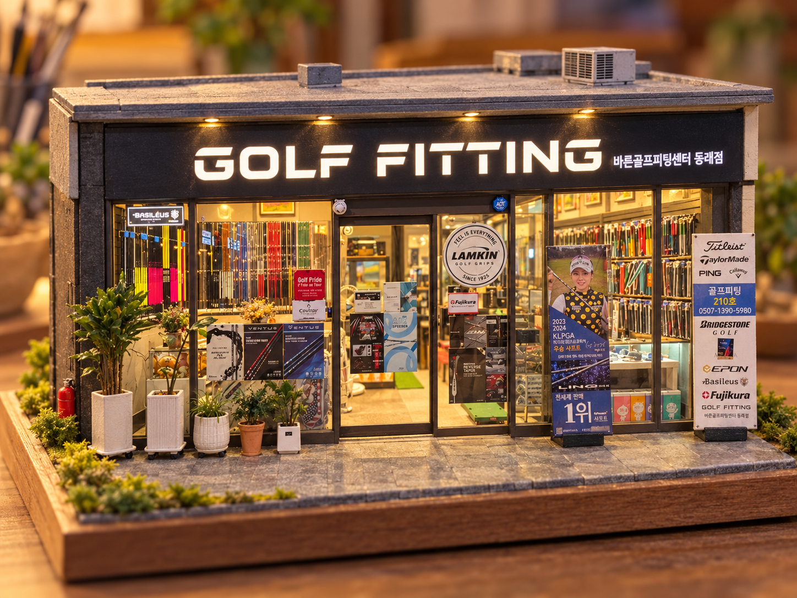

● PRECISION FITTING. BETTER GOLF.
당신의 스윙에,
정확한 답을.
좋은 클럽의 기준은, 당신입니다.
스윙 데이터와 섬세한 피팅으로 완성하는 나만의 골프.
BUILT AROUND YOUR SWINGSCROLL TO EXPLORE ↓

OUR STUDIO, IN MINIATUREBR GOLF ↗
YOUR SWING.✳YOUR CLUB.✳YOUR BEST GAME.✳BR GOLF FITTING STUDIO
01 / OUR PHILOSOPHY
클럽을 바꾸기 전에,
당신을 먼저 이해합니다.
같은 클럽도 누구의 손에 쥐어지느냐에 따라 달라집니다.
BR GOLF는 스윙의 작은 차이까지 살펴보고,
당신의 움직임에 자연스럽게 맞는 조합을 찾아갑니다.
01 데이터 기반 분석02 개인별 클럽 설계03 세밀한 밸런스 조정
02 / FITTING PROGRAMS
더 나은 플레이의 시작.
지금의 고민에 맞는 피팅을 만나보세요.
03 / THE PROCESS
감각을 데이터로.
데이터를 확신으로.
충분히 듣고, 정밀하게 분석하고,
직접 경험하며 맞춰갑니다.
- 01
상담 & 클럽 체크
플레이 스타일과 고민, 현재 사용하는 클럽을 확인합니다.
- 02
스윙 데이터 분석
스윙 스피드, 탄도, 스핀과 샷 패턴을 살펴봅니다.
- 03
테스트 & 맞춤 피팅
헤드와 샤프트 조합을 비교하며 적합한 세팅을 찾습니다.
- 04
최종 세팅 & 피드백
완성된 클럽을 점검하고 사용 방향을 안내합니다.
04 / INSIDE BR GOLF
당신의 골프를 위한 공간.
다양한 그립과 샤프트, 그리고 편안한 상담 공간.
BR GOLF의 매장을 둘러보세요.
편안하게 시작하는 피팅 상담
손끝의 감각까지, 다양한 그립
스윙에 맞는 조합을 찾아서
취향과 플레이를 함께 살피는 공간
BR GOLF JOURNAL

나만의 컬러로 완성하는
이토보리 아이언 피팅
헤드와 그립의 다채로운 디테일, 그리고 여성 골퍼를 위한 피팅 체크 포인트를 소개합니다.
VISIT BR GOLF
바른골프피팅센터 동래점 오시는 길
- 주소
- 부산시 동래구 사직북로4 삼정자이언츠파크 2층 210호
- 문의 전화
- 0507-1390-5980 ↗
- 주차 안내
- 지하 2층 · 지하 3층 무료 주차
건물 2층 210호로 방문해 주세요.
피팅 상담과 방문 문의는 전화로 연락해 주세요.
바른골프피팅센터 동래점삼정자이언츠파크 2층 210호
삼정자이언츠파크 · 2층 210호
원하는 지도에서 출발지를 입력해 길찾기를 시작하세요.
LET’S FIND YOUR FIT
당신의 다음 샷이
달라지는 곳.
궁금한 프로그램을 선택하고 상담 내용을 준비해 보세요.
현재 상담 메모 저장용 데모입니다.
온라인 예약 및 매장 전송은 연결되지 않았습니다.